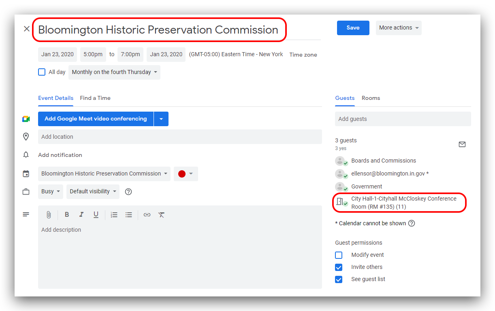
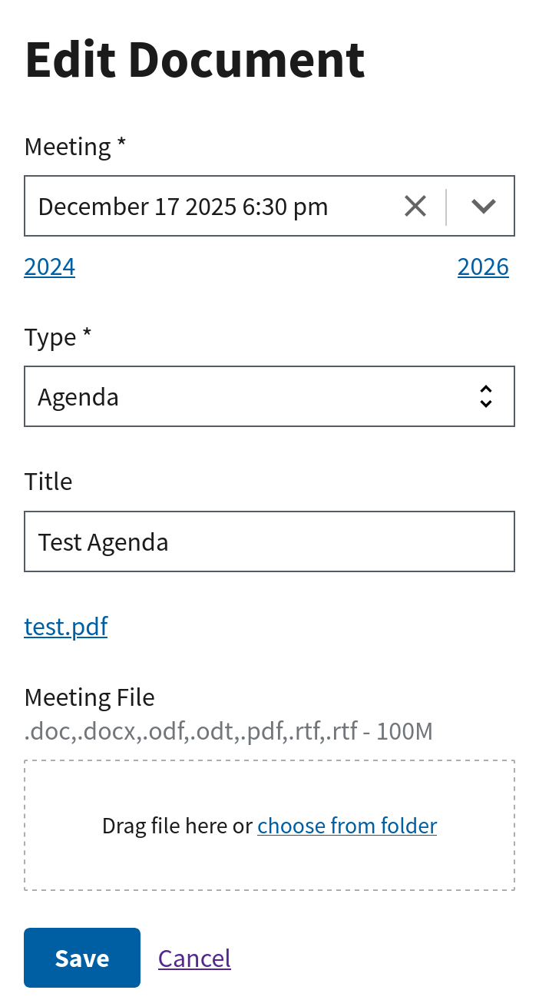

OnBoard
OnBoard
OnBoard Staff Guide
OnBoard is used to track information for Cityof Bloomington and some Monroe County Boards and Commissions.
Updates to memberships/appointments are handled by the Office of the Mayor.
For questions related to editing content on the City's website, please read the Content Creation Guide .
Meeting Calendars
If there is no Google calendar configured for your committee, you will not see dates to upload documents to.
The City's website uses Google Calendars to manage Boards and Commissions meeting schedules. Events added to the corresponding Google Calendar will automatically show up on the website.
These calendars are shared with City liaisons. If you are a City liaison for a Board or Commission and do not have access to the corresponding Google calendar, please contact helpdesk@bloomington.in.gov for access. Once the calendar has been shared with you and you click the "add calendar" link in the email from Google, it should show up in the Google calendar interface under "My Calendars":
For consistency, only use the full name of the board or commission as the title of the event on the calendar.Other information (your last name and extension) can be added to the details field in the event.
In-person events
Please be sure to add / invite the appropriate City meeting room to the event. The list of available conference rooms can be found under the Rooms tab on the right side next to Guests:
Virtual events
Public meetings are hosted on our Zoom account. Your department has a designated point of contact for Zoom and they will need to schedule the meeting. Copy the meeting's invitation link and add it to the "Description" field of the calendar event. In the "Location" field add the URL from the invitation link.
Once you've added events to the calendar, they should show up on the website and Showers Atrium kiosk when the calendars automatically sync, approximately every hour.
If you have any questions about how to use Google Calendar, please contact ITS.
Uploading Meeting Files
The Meetings tab allows Agendas, Memorandums, Minutes, and Packets to be uploaded and associated with a specific meeting date. Dates and time for the corresponding meeting are derived from the Board's corresponding Google Calendar.
- To upload files, go to the Board's Meetings tab and click on a meeting date.
- Click Add under Meeting Files.
- Confirm the Meeting date and time and choose a file Type then click Save.
If you need to delete a file that was added to the wrong place, use the Board's Meetings tab to go to the meeting date and click delete to the file in question:
Updating Meeting Files
If you need to edit a file:
- Use the Board's Meetings tab to go to the meeting date and click edit to the file.
- You can change the Type, Title or replace the file.

Preparing application packets
There may be members of boards and commissions who need to review applications, but will not have an account to view those applications directly in onBoard. It is possible to generate a PDF of those applications and then share them electronically with others.
Navigate to the section to a board's Applications section, then choose the Applicants and seats that you want to share. In this example there are three active applications.
From there you can use the "View Report" button to see all of the selected details on a single page.
To share this with other City staff or City council, you can print this page to a PDF, and share that PDF with the appropriate people directly. Print page by using the keyboard shortcut Ctrl+ Por selecting the action from the browser menu. The next step varies from browser to browser. For Chrome, in the destination drop down menu, select "Save as PDF".
Select the location to save the PDF and name the file.
All Members / Email List
Occasionally it is useful to see a list of everyone who is currently serving on a Board or Commission which is available on the Seats page. If you would like to download this information (including email addresses), use the "CSV" button.